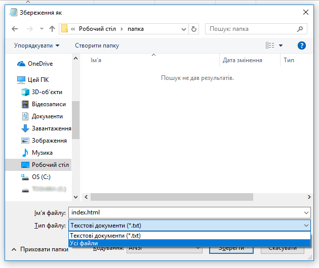
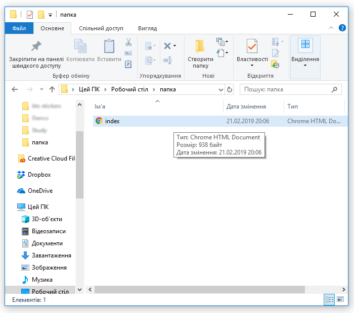
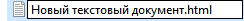

Створюємо файл у Блокноті
Спосіб №1
1. Відкрийте программу "Блокнот" (Її ви можете знайти у розділі "Стандартні программи"). Тут ви будете писати ваш код.

2. Коли роботу закінчено, натисніть на "Файл" у лівому верхньому кутку і виберить "Зберегти як".

3. У вас має з'явитись вікно збереження. Зверніть увагу! По замовчуванню розширення файлу .txt, а нам потрібно .html, тому перейменуймо, наприклад, на index.html

4. Щоб файл зберігся у під назвою index з розширенням .html, а не index.html з розширенням .txt, у "Тип файлу" виберіть "Усі файли".

5. Тепер зберігаємо. Кодування можете поки що не чіпати.

5. Тепер у вас з'явиться файл index у розширенні .html

Спосіб №2
1. ПКМ клацнути на порожній простір у провіднику
З'явиться меню.

2.Далі ми маємо навести вказівник миші на пункт меню під назвою "Створити". З'явиться меню . у ньому треба вибрати текствоий документ.

4. Далі треба змінити розширення файлу. Нв фото воно не виділено.

5. Змінивши його натискаємо Ентер та погоджуємося із усім.

6. Після зміни іконка файлу виглядатиме по-іншому.